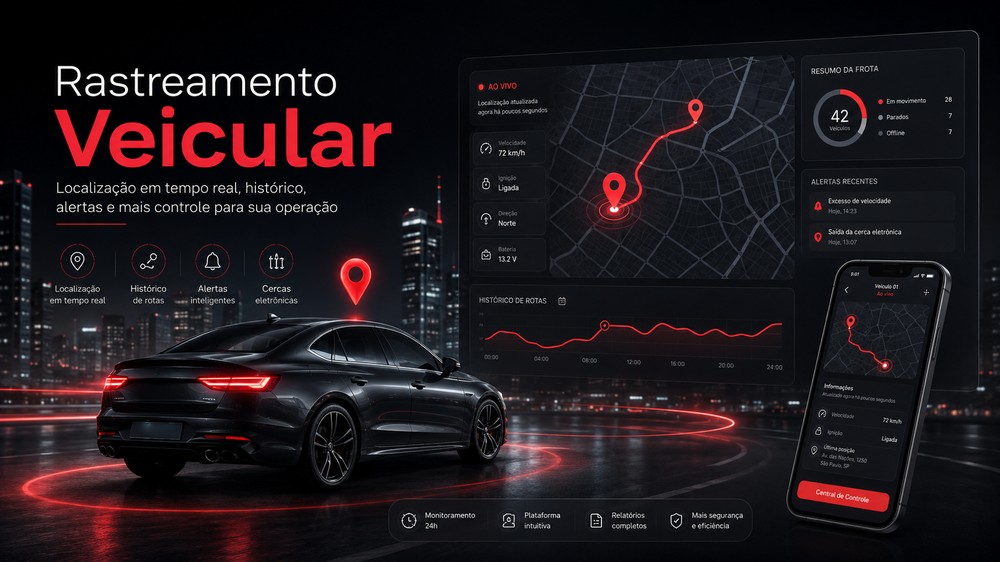
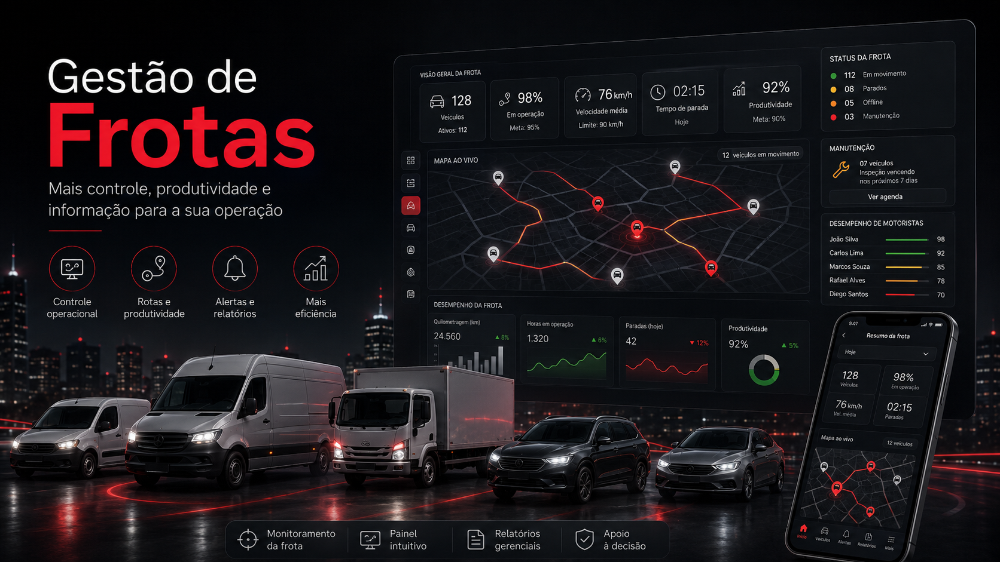
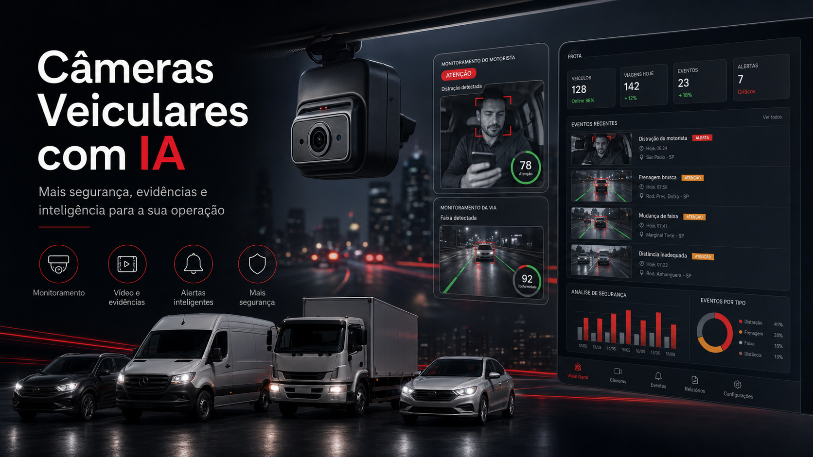
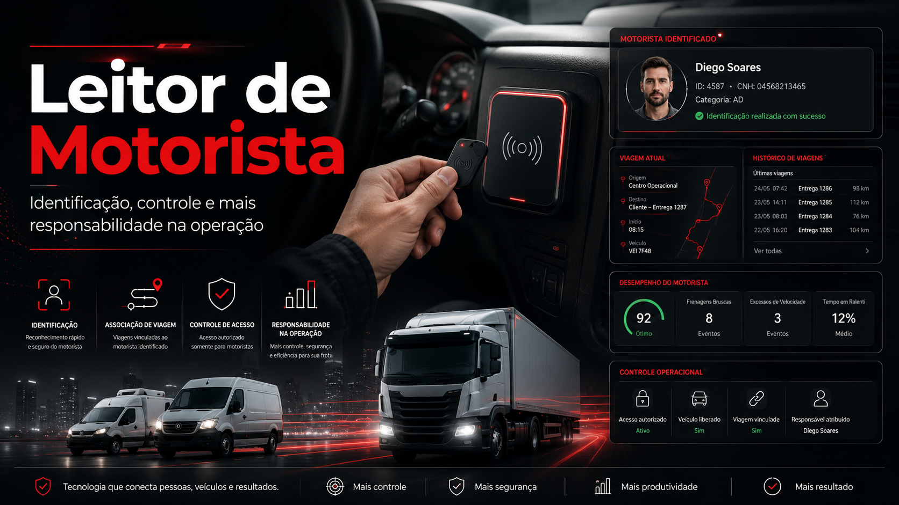
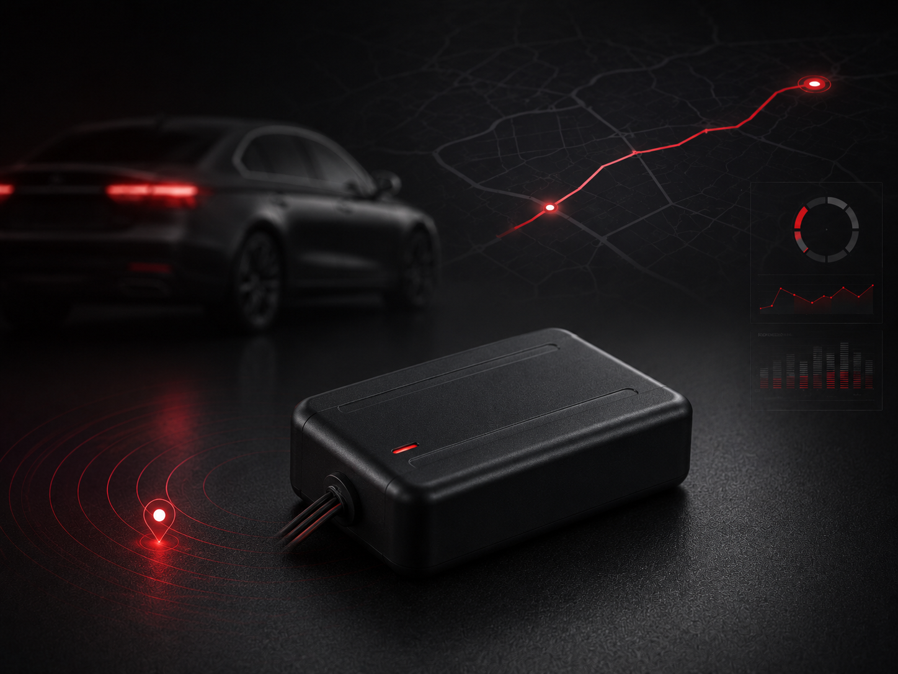
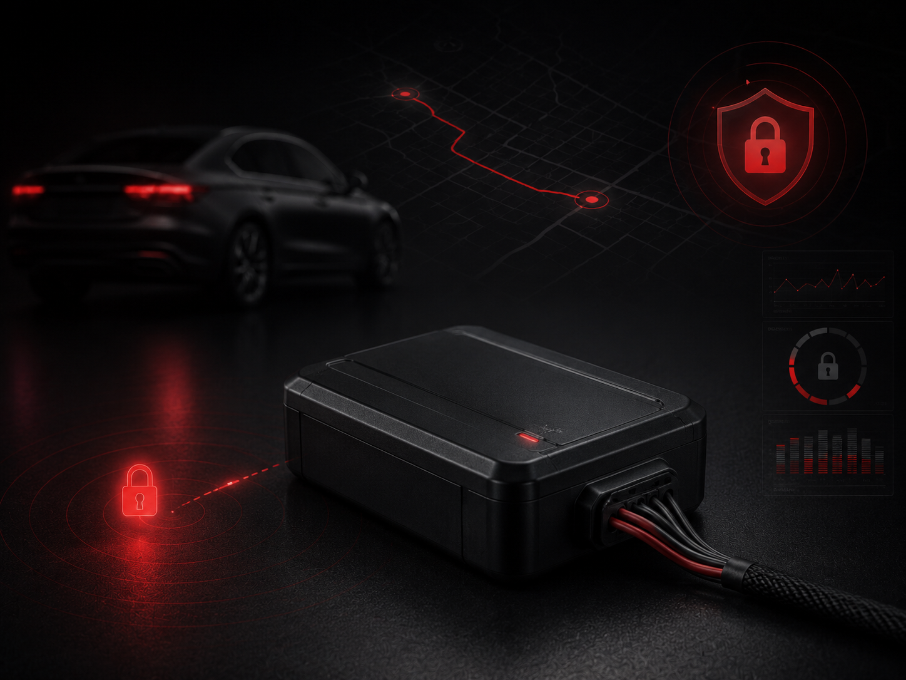
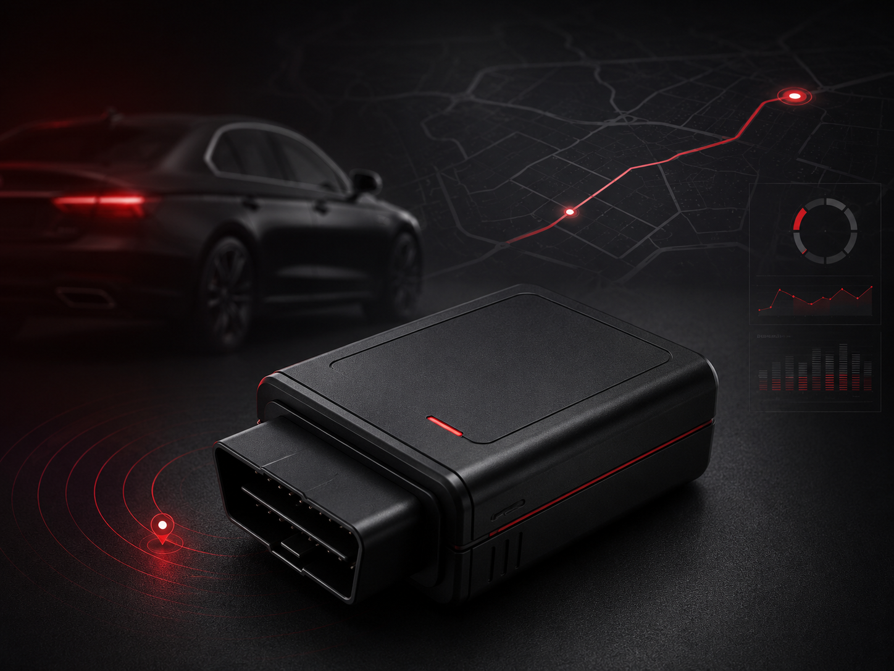
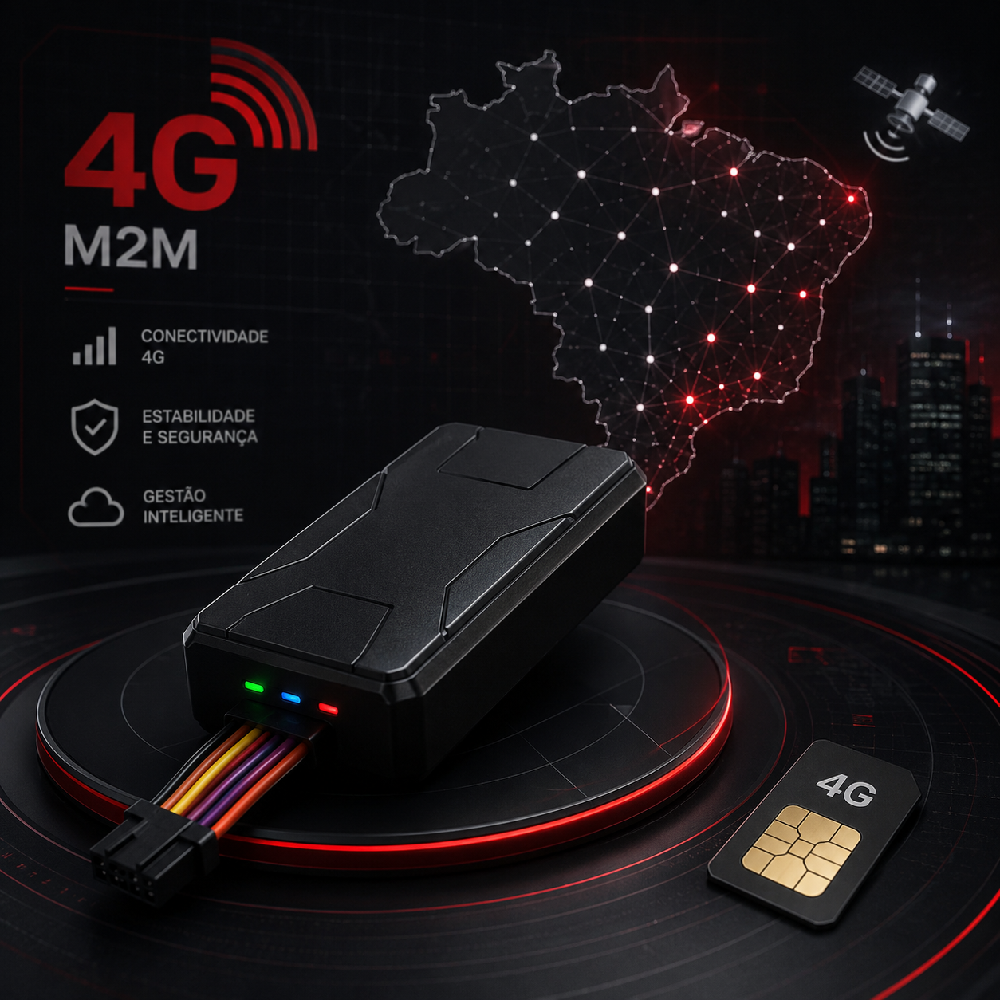
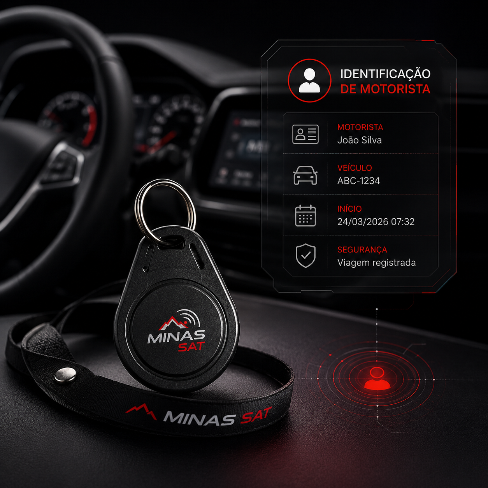
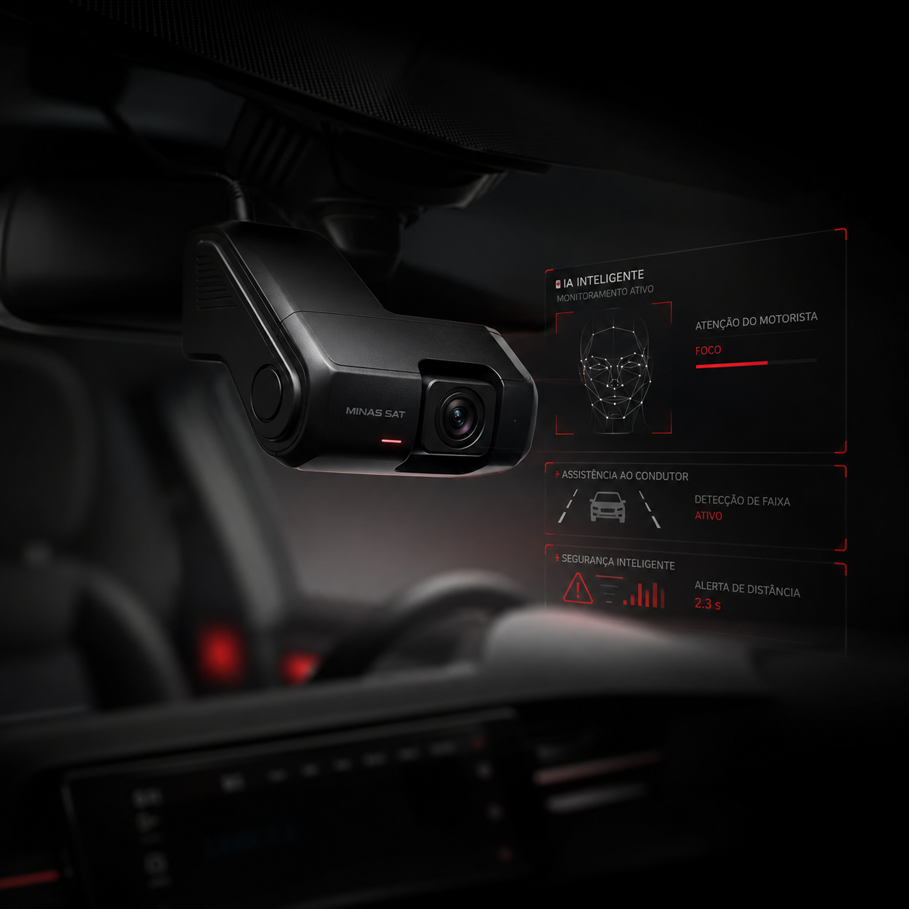

01

✓Imagem ilustrativa
Rastreamento Veicular
Localização em tempo real, histórico de rotas, cercas eletrônicas, alertas e apoio à segurança do veículo.
A Minas Sat atende veículos particulares, empresas e frotas com rastreamento, gestão operacional, leitor de motorista, câmeras veiculares e produtos definidos conforme a necessidade do cliente.
Sede em Betim-MG, atendimento nacional. A indicação da solução considera veículo, operação, região de uso e recursos desejados.
Cada serviço tem uma página própria com explicação, imagem ilustrativa, aplicações, benefícios e botão de WhatsApp direcionado ao assunto.

Localização em tempo real, histórico de rotas, cercas eletrônicas, alertas e apoio à segurança do veículo.

Dados e relatórios para controlar rotas, horários, paradas, produtividade e uso da frota.

Monitoramento por vídeo para operações que precisam de evidência, prevenção e análise de comportamento.

Identificação do condutor para associar viagens, jornada, infrações e responsabilidade ao motorista correto.
Produtos apresentados por família de solução, para orientar a escolha conforme o tipo de veículo, operação e nível de controle desejado.

Equipamento indicado para controle essencial de veículos, com localização, histórico e alertas conforme configuração.

Solução para operações que exigem recurso de bloqueio remoto dentro de protocolo seguro e previamente definido.

Opção prática para cenários em que a instalação simplificada faz sentido operacional e técnico.

Alternativa indicada quando a operação demanda tecnologia de comunicação atualizada e maior aderência de rede.

Recurso para associar o uso do veículo ao condutor, melhorando controle, responsabilidade e gestão individual.

Solução de vídeo para operações que precisam de evidência, prevenção de sinistros e apoio à segurança.
A Minas Sat atende clientes em diferentes regiões, considerando a solução adequada para cada veículo, frota e rotina operacional.
A Minas Sat une tecnologia, segurança e atendimento próximo para oferecer rastreamento veicular com responsabilidade e foco no resultado do cliente.
Proteger veículos, frotas e operações por meio de soluções inteligentes de rastreamento, monitoramento e gestão.
Ser referência nacional em rastreamento veicular e gestão de frotas, reconhecida pela confiabilidade e atendimento próximo.
Segurança, confiança, agilidade no atendimento, responsabilidade técnica e compromisso com resultado.
A Minas Sat possui experiência no atendimento a clientes públicos, empresas e operações que exigem rastreamento confiável, suporte técnico e controle operacional.
Respostas diretas para dúvidas que costumam aparecer antes da cotação.
Sim. A Minas Sat tem sede em Betim-MG e atende operações em todo o Brasil, considerando disponibilidade técnica, região e solução adequada para cada caso.
Sim. A transmissão dos dados depende da cobertura disponível na região de uso, do tipo de veículo, da instalação e da solução contratada.
Sim. O acompanhamento pode ser feito por aplicativo e ambiente web, conforme liberação de acesso do cliente.
O bloqueio pode ser trabalhado conforme solução, veículo e protocolo de segurança. A aplicação deve ser feita com critério para evitar riscos ao condutor e terceiros.
Sim. A solução é indicada conforme o tipo de veículo, a instalação necessária, a região de uso e os recursos desejados.
Sim. A Minas Sat trabalha com soluções de câmeras veiculares para operações que precisam de evidência, segurança e monitoramento por vídeo.
O foco comercial é entregar a solução adequada, não apenas um equipamento avulso. O produto é definido conforme veículo, operação, cobertura e nível de controle desejado.
Tipo de veículo, quantidade, cidade/UF, região de circulação e quais recursos deseja: rastreamento, câmeras, leitor, bloqueio ou gestão de frota.
Clientes recebem login e senha e podem acessar pela Área do Cliente do site.
Solicite uma cotação, tire dúvidas sobre produtos ou peça uma análise para sua frota, veículo ou operação.